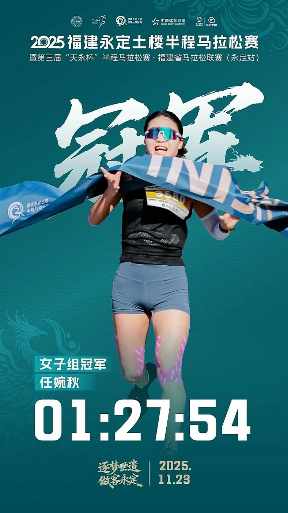
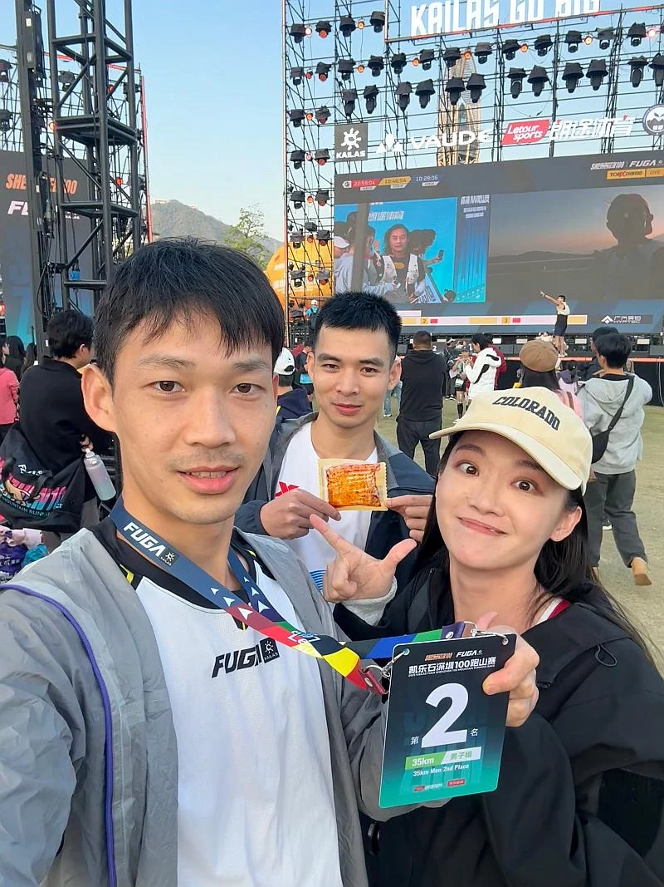
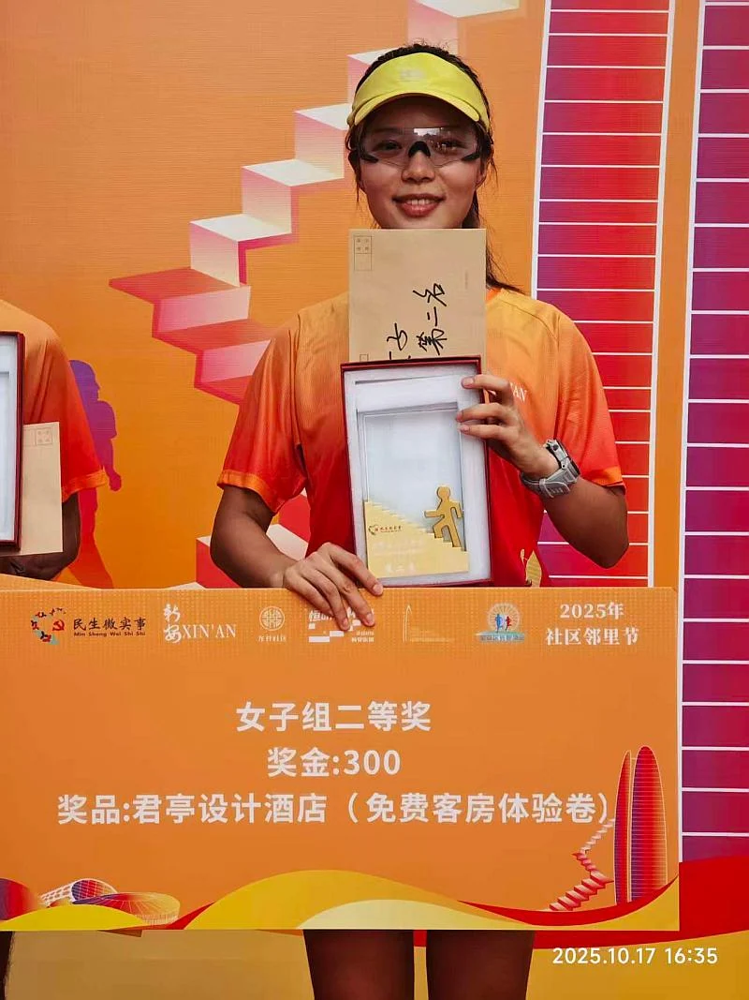
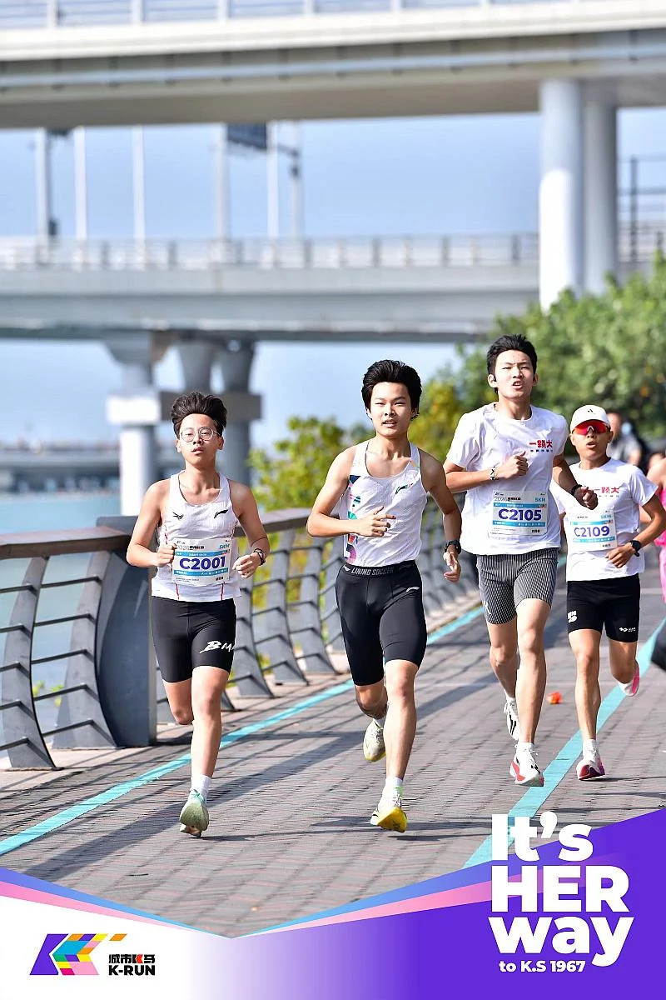
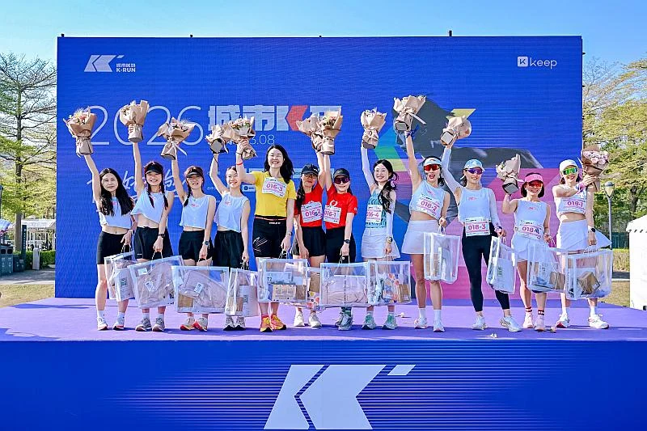

SHENZHEN YOU RUNNING CLUB / HONOURS
跑团荣誉与成员成绩
每一次站台，都是训练留下的印记。
从跑团发布的历年活动战报中整理，记录赛事、组别、名次和原帖，持续更新。
代表跑友
个人成绩 · 公开战报
VERTICAL / TRAIL
徐婷（夏至）
女子冠军2026 深圳职工垂直登高大赛
深圳工会成绩公布 ↗- 2026 梧桐三洲
女子冠军 · 3:12:50 ↗ - 2025 神农架森林越野赛 70KM
女子季军 ↗ - 2025 大武夷超级山径赛 60KM
女子第4名 ↗





2026.03.08 · KEEP 城市K马深圳站
女子接力冠军
are YOU ok
阿燕 · 粉大人 · Elisa · Judy
四位跑友携手夺得女子接力第一名，同日跑不快的小黑获得男子5KM亚军。
查看冠军战报 ↗历年成绩记录
已收录 29 条按跑团战报存档月份倒序排列。名次对应具体赛事组别，名字沿用赛果或原帖昵称。
| 报道月份 | 项目 | 跑友 / 战队 | 赛事 | 成绩 | 出处 |
|---|---|---|---|---|---|
| 2026.06 | 越野 | 树新蜂 | 塘朗双阁夜跑 | 男子第3名 | 原帖 ↗ |
| 2026.06 | 越野 | 吹少 | 塘朗山赛事 | 季军 | 原帖 ↗ |
| 2026.05 | 越野 | 徐婷（夏至） | 山顶见系列赛·梧桐三洲站 22.3KM | 女子冠军 · 3:12:50 | 原帖 ↗ |
| 2026.04 | 越野 | 苏荷 | 极径梅塘越野跑 | 女子冠军 | 原帖 ↗ |
| 2026.03 | 团队 | 阿燕、粉大人、Elisa、Judy | 城市K马深圳站女子接力（are YOU ok） | 冠军 | 原帖 ↗ |
| 2026.03 | 路跑 | 跑不快的小黑 | 城市K马深圳站 | 男子5KM亚军 | 原帖 ↗ |
| 2026.03 | 越野 | 徐婷（夏至） | SALOMON GO野梅林之翼 | 女子第3名 | 原帖 ↗ |
| 2026.01 | 垂直 | 徐婷（夏至） | 深圳职工垂直登高大赛 | 女子冠军 | 原帖 ↗ |
| 2026.01 | 越野 | 快乐凡凡 | 山野来赛三水线站 | 男子季军 | 原帖 ↗ |
| 2025.12 | 越野 | 抬腿5公里 | 深圳100越野赛35KM | 男子第2名 | 原帖 ↗ |
| 2025.12 | 路跑 | 秋大大 | 珠海马拉松 | 女子第4名 | 原帖 ↗ |
| 2025.11 | 路跑 | 任婉秋（秋大大） | 福建永定土楼半程马拉松 | 女子冠军 · 1:27:54 | 原帖 ↗ |
| 2025.11 | 路跑 | 小喇叭 | 虎门半程马拉松 | 女子第16名 | 原帖 ↗ |
| 2025.11 | 越野 | 番茄、豆干 | 大武夷超级山径赛100KM | 双人组季军 | 原帖 ↗ |
| 2025.11 | 越野 | 徐婷（夏至） | 大武夷超级山径赛60KM | 女子第4名 | 原帖 ↗ |
| 2025.11 | 越野 | 徐婷（夏至） | 长江三峡（巫山）越野赛 | 女子第4名 | 原帖 ↗ |
| 2025.10 | 垂直 | 肉鸽 | 龙井社区垂直马拉松 | 女子第2名 | 原帖 ↗ |
| 2025.09 | 越野 | 徐婷（夏至） | 神农架森林越野赛70KM | 女子季军 | 原帖 ↗ |
| 2025.09 | 越野 | 徐婷（夏至） | 马峦山越野赛 | 女子第3名 | 原帖 ↗ |
| 2025.05 | 越野 | Elisa | 首野黄塘越野赛35KM | 女子第4名 | 原帖 ↗ |
| 2025.01 | 团队 | YOU女神天团 | 湾区女子半程马拉松 | 团队第10名 | 原帖 ↗ |
| 2025.01 | 团队 | YOU-LADIES | 湾区女子半程马拉松 | 团队第39名 | 原帖 ↗ |
| 2024.12 | 路跑 | 唐少 | 深圳马拉松 | 市民奖第9名 | 原帖 ↗ |
| 2024.11 | 路跑 | 抬腿5公里 | 松山湖半马 | 男子第3名 | 原帖 ↗ |
| 2024.11 | 路跑 | best树新风 | 松山湖半马 | 男子第6名 | 原帖 ↗ |
| 2024.11 | 越野 | 暴走小姐 | 小猫快跑凤凰山站20KM | 女子第2名 | 原帖 ↗ |
| 2024.07 | 路跑 | 婉秋 | 耐克5KM竞速挑战赛 | 女子第1名 | 原帖 ↗ |
| 2024.07 | 垂直 | 徐婷（夏至） | 李宁大厦登顶 | 女子第3名 | 原帖 ↗ |
| 2024.04 | 越野 | 豆干 | 汕头南澳越野挑战赛40KM | 男子第3名 | 原帖 ↗ |